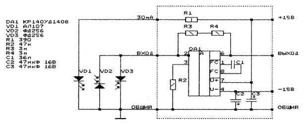
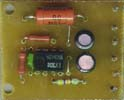
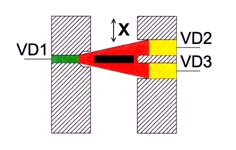

Дифференциальный фотоэлектронный датчик положения и малых перемещений
Введение
Фотоэлектронный датчик позволяет добиться хорошего пространственного разрешения. Построение датчика по дифференциальной схеме дает возможность существенно повысить чувствительность и линейность и избавиться от необходимости использования дополнительной схемы сдвига нуля. Достоинствами дифференциального фотоэлектронного датчика являются относительная простота конструкции и малые размеры при хороших характеристиках, таких, как чувствительность (может достигать десятков милливольт на микрометр) и помехозащищенность (датчик работает в инфракрасной области спектра, паразитная засветка является синфазной для дифференциальных каналов). В принципе, свойства дифференциального фотоэлектронного датчика позволяют проводить пространственные измерения в нанометровой области.
Электрическая принципиальная схема и конструкция дифференциального фотоэлектронного датчика
Электрическая принципиальная схема дифференциального фотоэлектронного датчика приведена на рис. 1. Резистор R1 играет роль источника тока инфракрасного светодиода VD1 (АЛ107). Световой поток от светодиода VD1 достигает фотодиодов VD2, VD3 (ФД256), включенных встречно-параллельно. Разность сигналов фотодиодов поступает на вход операционного усилителя DA1 (КР140УД1408), выполняющего функцию преобразователя ток-напряжение, и усиливается до необходимого значения (коэффициент преобразования задается величиной резисторов R3, R4). Питание датчика осуществляется от двухполярного источника напряжением +15 В (можно использовать напряжения от +1.5 В при соответствующем подборе компонентов). Конструкция датчика должна обеспечивать противофазное изменение светового потока от светодиода к фотодиодам. При необходимости вместо одного светодиода VD1 можно применить два последовательно включенных светодиода.

Рис. 1. Электрическая принципиальная схема дифференциального фотоэлектронного датчика.
Электронный преобразователь дифференциального фотоэлектронного датчика положения и малых перемещений собран на печатной плате размером 40 х 30 мм2 (рис. 2).

Рис. 2. Печатная плата электронного преобразователя дифференциального фотоэлектронного датчика. Размеры 40 х 30 мм2.
На рис. 3 показана возможная схема установки одного светодиода и двух фотодиодов. Светодиод и фотодиоды устанавливаются в отверстиях на неподвижном основании. Между ними располагается подвижная шторка, перекрывающая световой поток. При перемещении шторки в направлении X перекрытие светового потока для одного фотодиода уменьшается, а для другого - увеличивается. Коэффициент преобразования в такой системе с использованием вышеприведенной электронной схемы имеет порядок 10 В/мм = 10 мВ/мкм = 10 мкВ/нм.

Рис. 3. Вариант схемы установки светодиода и фотодиодов.
Фотоэлектронный датчик в качестве датчика положения применялся в макете магнитного подшипника [1], а также в системе управления рычажных весов с разрешением 1 мг [3]. При соответствующей конструкции может быть использован для измерения других физических величин. За более подробной информацией обращайтесь к автору (раздел Контактная информация).
Ссылки:
20.04.2008
17.05.2012
Альтернативные источники
энергии
Компьютеры и
Интернет
Магнитные поля
Механотронные системы
Перспективные
разработки
Электроника и технология